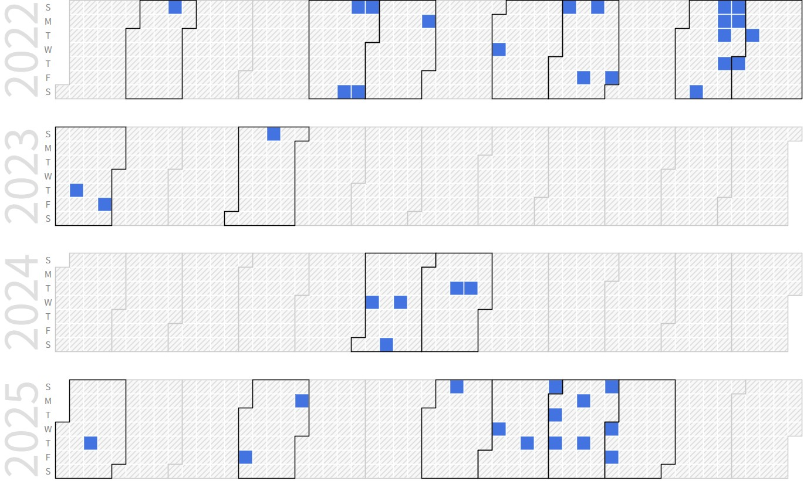

Yonghun Lee (Integrated Ph.D. Candidate, Senior Researcher @ Kwanak Analog)
 |
Integrated Ph.D. Candidate |
Repository Commit History
|  |
Introduction
Full Bio Sketch
Mr. Lee received the B.S degree in Electronics Engineering at Jeonbuk National University, Jeonju, Korea in 2004. Mr. Lee was a research engineer at Samsung Electronics over 16 years from 2004 to 2020. And have worked on high speed intra-panel interface and touch sensor controller. He is currently an Ph.D. student in School of Electronics Engineering at Kyungpook National University, Daegu, Republic of Korea. His research interests include one-dimensional hardware acceleration for embedded systems.
Research Topic
 Most verilog verification flows are iterative cylce of design-compile-simulation-debugging and updating. 1) Write the source code using verilog for the circuit. 2) Creating the test-benchs involves test cases and checker. 3) Run the simulation. 4) Debugging and updating the design including testbenches. Turn around time of the design cycle takes much time when the testbenches changed or added including test cases and checker. Tcl-based verification code for dynamically could replace a verilog stimuls while the simulation is running. Tcl verification code in the simulator When the test stimulus changed, the turnaround time increases significantly, because all designs including DUT need recompling. To solve the long iterative simulation time, the proposed verification flows use the Tcl based verification code generation for dynamically from previous simulation snapshot. Our proposed verification flow is shown in Fig. 2. 1) Write source code including DUT and testbenchs using verilog. Testbenchs are only including the common code such as clock source and DUT instanciation. 2) Verilog task and function for driving stimuls and checking the results is implemented by Tcl based verification code which is pluggable on the simulation run time. This pulggable code could be added or deleted in the simulation run time without recompiling source code. Simulator could skip the compile process, just like running executable batch files instead of new compiling each time while you run new simulation. 3) We are able to save the full state of the simulation snapshot during runtime to a file, restore it at a later time and continue running simulation from the same point. If several test cases are different only after the simulation warms up, you may run the simulation up to end of its warm-up period only once, save the sate and then reload it for every test cases. 4) During checking and updating period, reloading the snapshot has ability to roll-back to previous state 2) or 3).
Most verilog verification flows are iterative cylce of design-compile-simulation-debugging and updating. 1) Write the source code using verilog for the circuit. 2) Creating the test-benchs involves test cases and checker. 3) Run the simulation. 4) Debugging and updating the design including testbenches. Turn around time of the design cycle takes much time when the testbenches changed or added including test cases and checker. Tcl-based verification code for dynamically could replace a verilog stimuls while the simulation is running. Tcl verification code in the simulator When the test stimulus changed, the turnaround time increases significantly, because all designs including DUT need recompling. To solve the long iterative simulation time, the proposed verification flows use the Tcl based verification code generation for dynamically from previous simulation snapshot. Our proposed verification flow is shown in Fig. 2. 1) Write source code including DUT and testbenchs using verilog. Testbenchs are only including the common code such as clock source and DUT instanciation. 2) Verilog task and function for driving stimuls and checking the results is implemented by Tcl based verification code which is pluggable on the simulation run time. This pulggable code could be added or deleted in the simulation run time without recompiling source code. Simulator could skip the compile process, just like running executable batch files instead of new compiling each time while you run new simulation. 3) We are able to save the full state of the simulation snapshot during runtime to a file, restore it at a later time and continue running simulation from the same point. If several test cases are different only after the simulation warms up, you may run the simulation up to end of its warm-up period only once, save the sate and then reload it for every test cases. 4) During checking and updating period, reloading the snapshot has ability to roll-back to previous state 2) or 3).
Publications
Journal Publications
Yonghun Lee and Daejin Park. Fast Verilog Simulation using Tcl-based Verification Code Generation for Dynamically Reloading from Pre-Simulation Snapshot (Under Review) Journal of the Korea Institute of Information and Communication Engineering, 2023.
Conference Publications (Intl. 5)
Yoon-Kyung Choi, Hyung Rae Kim, Wongab Jung, MinSoo Cho, Zhong-Yuan Wu, HyoSun Kim, and YongHun Lee. A 16.7M Color VGA Display Driver IC with Partial Graphic RAM and 500Mb/s/ch Serial Interface for Mobile a-Si TFT-LCDs in ISCC 2007.
Yoon-Kyung Choi, Zhong-Yuan Wu, KyungMyun Kim, and YongHun Lee. A Compact Low-Power CDAC Architecture for Mobile TFT-LCD Driver ICs in ISCC 2008.
Dong Hoon Baek, Jung Pil Lim, Han Su Pae, Jae Youl Lee, Wang Yu, Young Min Choi, and Yong Hun Lee. The Enhanced Reduced Voltage Differential Signaling eRVDS Interface with Clock Embedded Scheme for ChipOnGlass TFTLCD Applications in SID 2010.
Jin-Ho Kim, Woon-Taek Oh, Tae-Jin Kim, Jae-Yong Ihm, Younghwan Chang, Youngmin Choi, Donguk Park, Naxin Kim, Yonghun Lee. LCD-TV System with 2.8Gbps/Lane Intra-Panel Interface for 3D TV Applications in SID 2012.
Yonghun Lee and Daejin Park. Fast Verilog Simulation using Tcl-based Verification Code Generation for Dynamically Reloading from Pre-Simulation Snapshot In IEEE ICAIIC 2023, 2023.
Participation in International Conference
RISC-V Tech Day 2022, Tokyo, Japan
IEEE ICAIIC 2023, Bali, Indonnesia